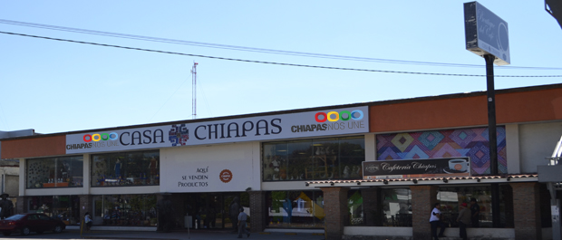

Dentro de la amplia gama de artesanías que existen en la República Mexicana, el estado de Chiapas ocupa un lugar relevante por la gran riqueza artesanal y diversidad de etnias que lo conforman, así como de sus raíces que se remontan a sus antepasados Mayas y Zoques, lo que crea un mosaico maravilloso de productos que expresan el sentir de un pueblo que conserva de forma muy arraigada sus tradiciones. En el Instituto Casa Chiapas encontrarás una gran variedad de artesanías pertenecientes a todo el Estado Chiapaneco como es Laca, Comestible, Textilería, Jarciería, Madera, Talabartería, entre otros. Casa Chiapas es parte del Instituto de las Artesanías cuyo principal objetivo es fomentar el desarrollo de las actividades artesanales a través de sus centros de distribución; Tuxtla Gutiérrez, San Cristóbal de las Casas, Palenque y Tapachula así como también en exposiciones y ferias. Al inicio de su fundación, este instituto fue conocido como el Instituto de las Artesanías, después en el 2008 adquiere el nombre de Instituto Masca Chiapas y finalmente en el 2010 pasa a ser el Instituto Casa Chiapas
Dirección: Boulevard. Belisario Domínguez No. 2035, Col. Xamaipak;C.P, C.P. 29067
Contacto:
Teléfonos: 961 60 2 65 65, 961 60 2 97 99
Dirigirse al lado poniente de la ciudad sobre la avenida central y hacer un recorrido de aproximado 2.3 km. (tomando con referencia el parque central). Dicho edificio se identifica bajo la leyenda “Casa Chiapas”
En el Instituto Casa Chiapas puedes comprar productos artesanales, prendas textiles con diseño ancestral, piezas labradas en ámbar, alfarería y productos comestibles típicos de la región. Además en fechas programadas se realizan numerosas exposiciones de productos Chiapanecos

posicione el mouse sobre las imágenes